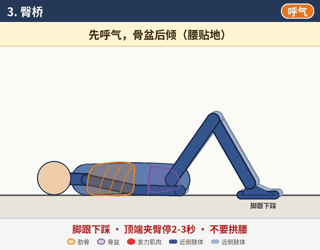
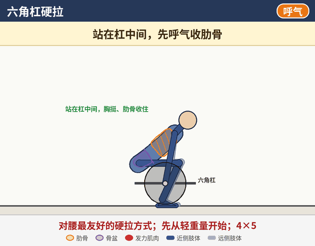

每个动作都先做好呼吸设置：先呼气收肋骨，再吸气往腰两侧和后背撑住。
怎么用：从第一阶段开始，达到每页底部“进入下一阶段的标准”后再进入下一阶段。每个动作都有示意动画和文字说明（姿势、动作、关键点、常见错误、组数次数）。
怎么看动画：深色是靠近你一侧的手脚，浅色是另一侧；橙色轮廓是肋骨，紫色是骨盆，红色是正在发力的肌肉，蓝色圈是腹压。右上角标签提示吸气 / 呼气。动画只是示意，实际节奏以文字里的秒数为准。
怎么看动画：深色是靠近你一侧的手脚，浅色是另一侧；橙色轮廓是肋骨，紫色是骨盆，红色是正在发力的肌肉，蓝色圈是腹压。右上角标签提示吸气 / 呼气。动画只是示意，实际节奏以文字里的秒数为准。
第一阶段
约前3周（第1-3周）
呼吸 · 激活 · 控制
恢复呼吸和肋骨位置，激活臀肌，建立核心控制，同时把深蹲、卧推调整成对腰友好的方式。
动作：90/90呼吸、死虫、臀桥、侧卧蚌式、鸟狗、跪姿髋屈肌拉伸、修正后的深蹲

进入第一阶段
第二阶段
第4-8周
臀部力量 · 屈髋模式
建立臀部力量和屈髋（髋铰链）模式，把呼吸和腹压带进负重动作。
动作：负重臀推、贴墙/木棍髋铰链、壶铃罗马尼亚硬拉、保加利亚分腿蹲、后撤步弓步、平板支撑、侧平板、Pallof推

进入第二阶段
第三阶段
第8周以后
逐步恢复大重量
在动作稳定的前提下逐步恢复大重量，保持臀部发力和肋骨位置。
动作：杠铃深蹲（回归）、杠铃罗马尼亚硬拉、六角杠硬拉、杠铃臀推（加重）、单腿罗马尼亚硬拉、农夫行走

进入第三阶段
安全提示
- 出现腿麻、放射痛或疼痛加重，先停练并及时就医。
- 建议找运动康复师当面评估，再根据情况调整动作和强度。
- 本页为一般性训练示意，不能代替专业医疗建议。